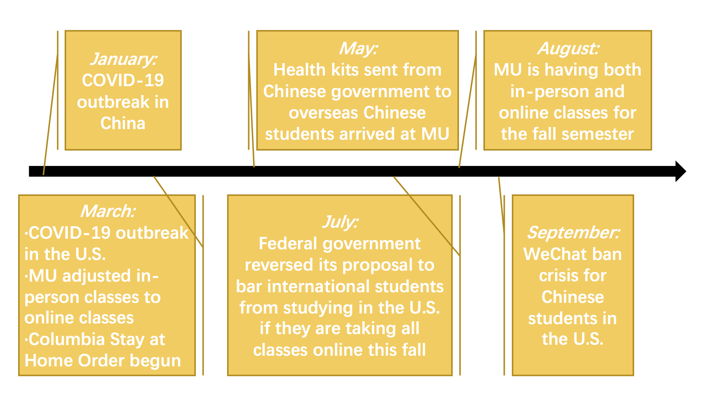

The major outbreak of COVID-19 happened in January for China and in March for the U.S. Due to the pandemic, MU adjusted in-person classes to online classes, and Columbia carried out its Stay at Home Order.
In May, the health kits sent from Chinese government to overseas Chinese students arrived at MU, and in July, the federal government reversed its proposal to bar international students who are taking all classes online this fall from studying in the U.S.
The fall semester has started in August, and MU is having both in-person and online classes. In September, possible WeChat ban became a concern for Chinese students in the U.S.